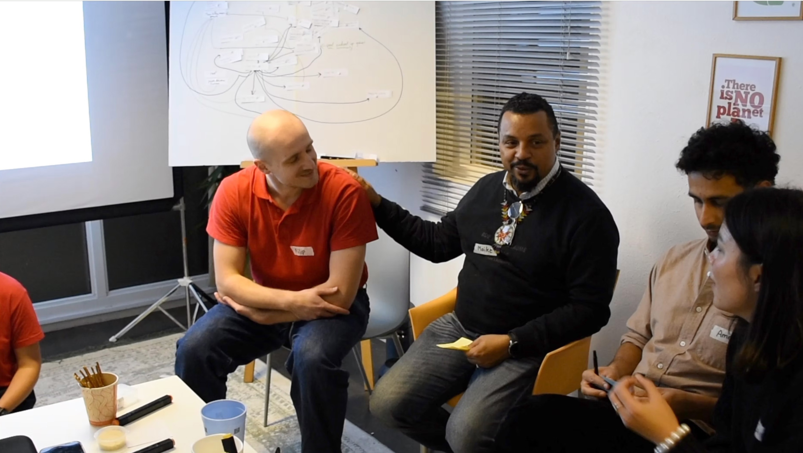
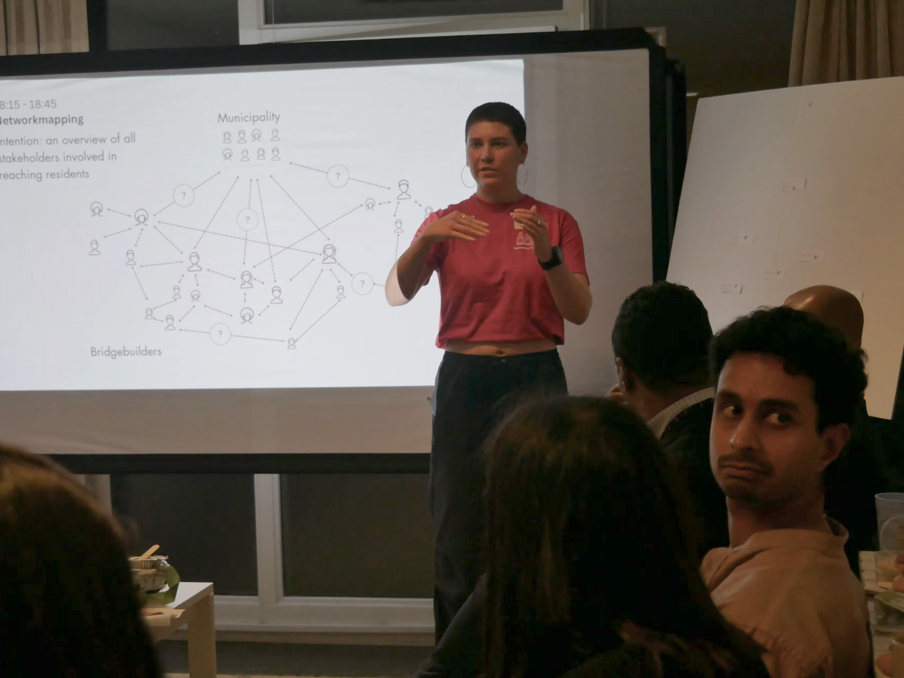

Just Energy Transition: Bridging Communities and Institutions
How can an energy transition be just if the people most affected struggle to be heard?
During a five-month Living Lab with Energie Lab Zuidoost and Stichting EGK Centre, we explored why the energy transition in Amsterdam Zuidoost was progressing more slowly than hoped. In a neighbourhood shaped by social inequalities and complex relationships with institutions, we wanted to understand what was standing in the way.
Through fieldwork and interviews, we found that trust was a major challenge, shaped by both historical experiences and institutional structures. We also discovered the importance of local bridge builders: people connecting communities and institutions, often without the recognition or support they deserve.
We organised three co-creation sessions bringing together community bridge builders and institutional stakeholders to discuss trust, accountability and access to resources. These conversations also informed a stakeholder network map, designed to make relationships visible and help people find each other. We produced an explanatory video, with two excerpts shown here.
In one of the sessions, we gathered insights for developing a stakeholder network map. We gave every stakeholder a place on the map to help people find each other and to visualise the relationships between them. We also produced an explanatory video, of which two excerpts are shown here.
This project deepened my interest in the social side of urban transitions, where relationships, community knowledge and trust matter just as much as technical solutions.



